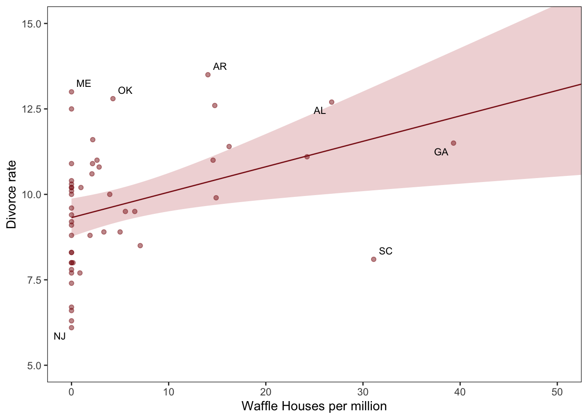
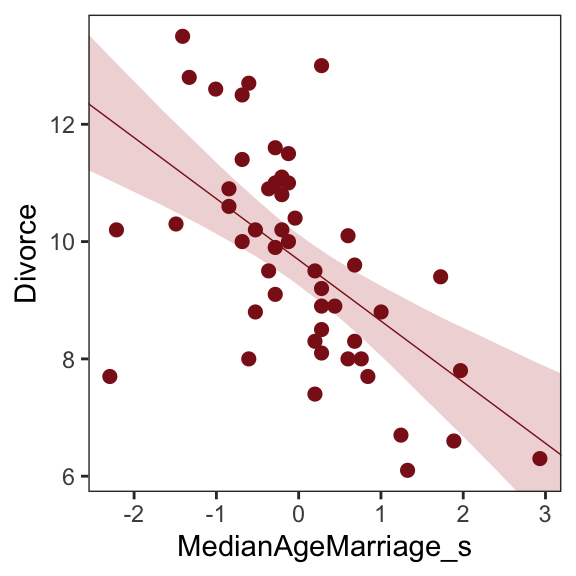
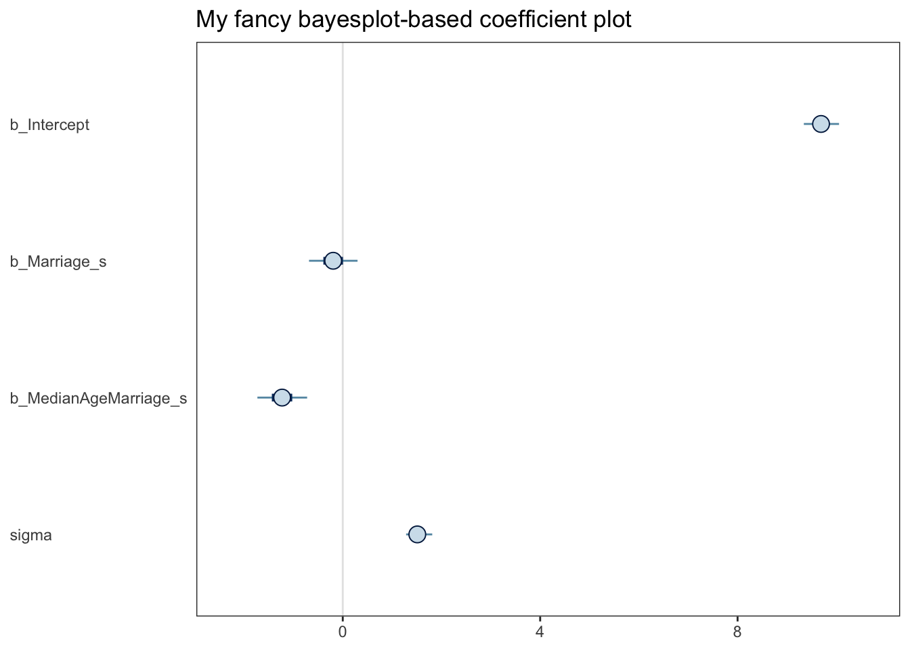
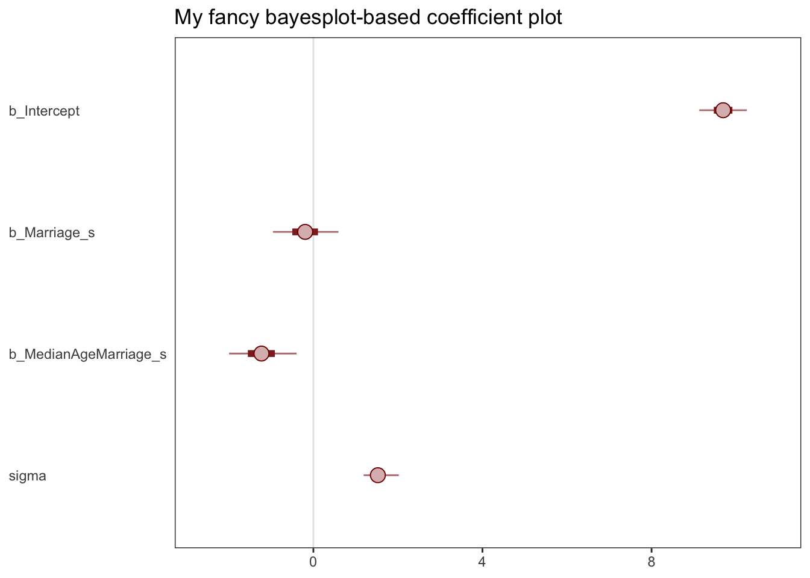

25 Ch 5. The Many Variables & The Spurious Waffles
Load the Waffle House data.
Reasons given for multiple regression models include: (1) Statistical -control” for confounds
DR: but endogenous controls can make this problem worse
5.1. Spurious association
But there’s no reason high marriage rate must cause more divorce
… the ‘causal’ part is ambiguous in this example, particularly when we are talking about aggregates like ‘rates for the whole population’. I’m familiar with the framework of the Rubin Causal model, where we consider the counterfactual state of some real-world outcome, when another real-world outcome would be set at one level or another.
easy to imagine high marriage rate indicating high cultural valuation of marriage and therefore being associated with low divorce rate
DR:1
Since the outcome and the predictor are both standardized, the intercept - should end up very close to zero
\(\alpha ∼ Normal(0, 0.2)\)
DR:2
So when \(\beta_A = 1\), a change of 1.2 years in median age at marriage is associated with a full standard deviation change in the outcome variable [which he thinks is absurdly large]
DR:3
[a model] that includes both age at marriage and marriage rate will help us.
DR:4maybe but these are aggregates. Casual thinking will be difficult. Primitives are more like ‘whether an individual of a certain age gets married or divorced’]
causal impact
DR:5
DAG will tell you the consequences of intervening to change a variable. But only if the DAG is correct
Perhaps a direct effect would arise because younger people change faster than older people and are therefore more likely to grow incompatible with a partner. Second, it has an indirect effect by influencing the marriage rate, which then influences divorce, A \(\rightarrow\) M \(\rightarrow\) D
these different arrows, we need more than one statistical model.
Model m5.1, the regression of D on A, tells us only that the total influence of age at marriage is strongly negative with divorce rate
DR:6
The ‘total’ here means we have to account for every path from A to D. There are two such paths in this graph: \(A \rightarrow D\), a direct path, and \(A \rightarrow M \rightarrow D\), an indirect path. In general, it is possible that a variable like A has no direct effect at all on an outcome like D. It could still be associated with D entirely through the indirect path. That type of relationship is known as mediation, and we’ll have another example later.
This DAG is also consistent with the posterior distributions of models m5.1 and m5.2. Why? Because both M and D ‘listen’ to A
conditional independencies … which variables become dis-associated when we condition on some other set of variables.
… that every pair of variables is correlated. This is because there is a causal arrow between every pair. These arrows create correlations.
DR:7but effects could add up to zero by coincidence. (Actually, he has a case like this further down, he just fails to mention it here.)]
They share a cause, and this leads them to be correlated with one another through that cause. But suppose we condition on A. All of the information in M that is relevant to predicting D is in A. So once we’ve conditioned on A, M tells us nothing more about D. So in the second DAG, a testable implication is that D is independent of M, conditional on A. In other words, \(D \perp M|A\).
Here’s the code to define the second DAG and display the implied conditional independencies.
Code
library(dagitty)
DMA_dag2 <- dagitty::dagitty('dag{ D <- A -> M }')
impliedConditionalIndependencies( DMA_dag2 )D _||_ M | ASo for example once you fit a multiple regression to predict divorce using both marriage rate and age at marriage, the model addresses the questions: (1) After I already know marriage rate, what additional value is there in also knowing age at marriage? (2) After I already know age at marriage, what additional value is there in also knowing marriage rate?
Coding data vis and univariate models (Kurz)
Kurz on themes and plots:9
Code
# install.packages("ggrepel", dependencies = T)
library(ggrepel)
d %>%
ggplot(aes(x = WaffleHouses/Population, y = Divorce)) + #note we can put transformations *within* the `aes`
stat_smooth(method = "lm", fullrange = T, size = 1/2,
color = "firebrick4", fill = "firebrick", alpha = 1/5) + #the linear plot and the shaded 'some sort of bounds' thing
geom_point(size = 1.5, color = "firebrick4", alpha = 1/2) +
geom_text_repel(data = d %>% filter(Loc %in% c("ME", "OK", "AR", "AL", "GA", "SC", "NJ")),
aes(label = Loc),
size = 3, seed = 1042) + # this makes it reproducible
scale_x_continuous("Waffle Houses per million", limits = c(0, 55)) +
ylab("Divorce rate") +
coord_cartesian(xlim = c(0, 50), ylim = c(5, 15)) +
theme_bw() +
theme(panel.grid = element_blank()) #removes gridlines
DR note: I’m skipping the map plotting, for now, even though it’s a cool vis.
fit the first univariable model.
Code
print(b5.1) Family: gaussian
Links: mu = identity; sigma = identity
Formula: Divorce ~ 1 + MedianAgeMarriage_s
Data: d (Number of observations: 50)
Draws: 4 chains, each with iter = 2000; warmup = 500; thin = 1;
total post-warmup draws = 6000
Population-Level Effects:
Estimate Est.Error l-95% CI u-95% CI Rhat Bulk_ESS Tail_ESS
Intercept 9.69 0.22 9.25 10.12 1.00 5173 4232
MedianAgeMarriage_s -1.04 0.21 -1.46 -0.63 1.00 4436 4274
Family Specific Parameters:
Estimate Est.Error l-95% CI u-95% CI Rhat Bulk_ESS Tail_ESS
sigma 1.51 0.16 1.24 1.86 1.00 5403 4424
Draws were sampled using sampling(NUTS). For each parameter, Bulk_ESS
and Tail_ESS are effective sample size measures, and Rhat is the potential
scale reduction factor on split chains (at convergence, Rhat = 1).Below…
- Create:
nd– tibble of standardized predictor values to plot over - apply
fittedtondwith thenewdataargument to fit values over this range (rather than over the data the model was fit on)
“to return model-implied expected values for Divorce”
Code
# define the range of `MedianAgeMarriage_s` values we'd like to feed into `fitted()`
nd <- tibble(MedianAgeMarriage_s = seq(from = -3, to = 3.5, length.out = 30))
# now use `fitted()` to get the model-implied trajectories
f <-
fitted(b5.1, newdata = nd) %>%
as_tibble() %>%
# tack the `nd` data onto the `fitted()` results
bind_cols(nd)And plot this…
Code
# plot
ggplot(data = f,
aes(x = MedianAgeMarriage_s, y = Estimate)) +
geom_smooth(aes(ymin = Q2.5, ymax = Q97.5),
stat = "identity",
fill = "firebrick", color = "firebrick4", alpha = 1/5, size = 1/4) +
geom_point(data = d, #overlaying the original data
aes(y = Divorce),
size = 2, color = "firebrick4") +
ylab("Divorce") +
coord_cartesian(xlim = range(d$MedianAgeMarriage_s),
ylim = range(d$Divorce)) +
theme_bw() +
theme(panel.grid = element_blank()) 
Next … they do the same thing but with marriage rate as the predictor
Code
print(b5.2) Family: gaussian
Links: mu = identity; sigma = identity
Formula: Divorce ~ 1 + Marriage_s
Data: d (Number of observations: 50)
Draws: 4 chains, each with iter = 2000; warmup = 500; thin = 1;
total post-warmup draws = 6000
Population-Level Effects:
Estimate Est.Error l-95% CI u-95% CI Rhat Bulk_ESS Tail_ESS
Intercept 9.68 0.25 9.19 10.17 1.00 5003 4432
Marriage_s 0.63 0.25 0.15 1.11 1.00 5641 4331
Family Specific Parameters:
Estimate Est.Error l-95% CI u-95% CI Rhat Bulk_ESS Tail_ESS
sigma 1.75 0.19 1.43 2.17 1.00 5148 3934
Draws were sampled using sampling(NUTS). For each parameter, Bulk_ESS
and Tail_ESS are effective sample size measures, and Rhat is the potential
scale reduction factor on split chains (at convergence, Rhat = 1).I’ll skip plotting this for now
Multiple regression notation
Model with
mu <- a + bM*M + bA*A
Notice how bA doesn’t move, only grows a bit more uncertain, while bM is only associated with divorce when age at marriage is missing from the model. You can interpret these distributions as saying:
Once we know median age at marriage for a State, there is little or no additional predictive power in also knowing the rate of marriage in that State. In that weird notation, \(D \perp M|A\). This tests the implication of the second DAG from earlier.
Since the first DAG did not imply this result, it is out
DR: This seems like a very weak test and a poor strategy for making inferences about causality (more so running with those inferences to underly future modeling). Even when age is present in the model, the compatibility intervals for the marriage rate coefficient include rather large coefficients in either direction.
Fitting the (multivariate) model
‘Priors for each slope’10
Code
print(b5.3) Family: gaussian
Links: mu = identity; sigma = identity
Formula: Divorce ~ 1 + Marriage_s + MedianAgeMarriage_s
Data: d (Number of observations: 50)
Draws: 4 chains, each with iter = 2000; warmup = 500; thin = 1;
total post-warmup draws = 6000
Population-Level Effects:
Estimate Est.Error l-95% CI u-95% CI Rhat Bulk_ESS Tail_ESS
Intercept 9.69 0.22 9.27 10.13 1.00 5542 4118
Marriage_s -0.19 0.30 -0.78 0.40 1.00 4042 4202
MedianAgeMarriage_s -1.23 0.31 -1.82 -0.62 1.00 4021 4081
Family Specific Parameters:
Estimate Est.Error l-95% CI u-95% CI Rhat Bulk_ESS Tail_ESS
sigma 1.53 0.16 1.25 1.88 1.00 5026 3391
Draws were sampled using sampling(NUTS). For each parameter, Bulk_ESS
and Tail_ESS are effective sample size measures, and Rhat is the potential
scale reduction factor on split chains (at convergence, Rhat = 1).mcmc_plot(b5.3) seems to produce a ggplot object:
Code
(
xxx <- mcmc_plot(b5.3) + ggtitle("My fancy bayesplot-based coefficient plot") +
theme_bw() +
theme(axis.text.y = element_text(hjust = 0),
axis.ticks.y = element_blank(),
panel.grid = element_blank()
)
)
With the bayesplot::mcmc_intervals function you can specify what you want more precisely.
Code
# install.packages("bayesplot", dependencies = T)
library(bayesplot)
post <- posterior_samples(b5.3)
color_scheme_set("red")
mcmc_intervals(post[, 1:4],
prob = .7,
prob_outer = 0.99,
point_est = "mean") + #Kurz and the default use 'median'
ggtitle("My fancy bayesplot-based coefficient plot") +
theme_bw() +
theme(axis.text.y = element_text(hjust = 0),
axis.ticks.y = element_blank(),
panel.grid = element_blank())
Note; this approach required you to work with the posterior_samples() instead of the brmsfit object. Just to be different, I set point_est = "mean" instead of median, and prob = .7 for the ‘inner interval’ and prob_outer = 0.99.
The tidybaes::stat_pointinterval() function offers a third way, this time with a more ground-up ggplot2 workflow.
… I will return to that later, perhaps
Plotting multivariate posteriors.
- Predictor residual plots. These plots show the outcome against residual predictor values. …
- Posterior prediction plots. These show model-based predictions against raw data, or otherwise display the error in prediction. They are tools for checking fit and assessing predictions. …
- Counterfactual plots. These show the implied predictions for imaginary experiments. These plots allow you to explore the causal implications of manipulating one or more variables.
Predictor residual plots
To get ready to make our residual plots, we’ll predict
Marriage_swithMedianAgeMarriage_s.
Code
print(b5.4) Family: gaussian
Links: mu = identity; sigma = identity
Formula: Marriage_s ~ 1 + MedianAgeMarriage_s
Data: d (Number of observations: 50)
Draws: 4 chains, each with iter = 2000; warmup = 500; thin = 1;
total post-warmup draws = 6000
Population-Level Effects:
Estimate Est.Error l-95% CI u-95% CI Rhat Bulk_ESS Tail_ESS
Intercept -0.00 0.10 -0.20 0.20 1.00 5731 4560
MedianAgeMarriage_s -0.71 0.10 -0.91 -0.51 1.00 5623 4288
Family Specific Parameters:
Estimate Est.Error l-95% CI u-95% CI Rhat Bulk_ESS Tail_ESS
sigma 0.72 0.08 0.59 0.89 1.00 5449 4270
Draws were sampled using sampling(NUTS). For each parameter, Bulk_ESS
and Tail_ESS are effective sample size measures, and Rhat is the potential
scale reduction factor on split chains (at convergence, Rhat = 1).With
fitted(), we compute the expected values for each state (with the exception of Nevada). Since theMedianAgeMarriage_svalues for each state are in the date we used to fit the model, we’ll omit thenewdataargument.
# A tibble: 6 × 19
Estimate Est.E…¹ Q2.5 Q97.5 Locat…² Loc Popul…³ Media…⁴ Marri…⁵ Marri…⁶
<dbl> <dbl> <dbl> <dbl> <fct> <fct> <dbl> <dbl> <dbl> <dbl>
1 0.431 0.119 0.199 0.667 Alabama AL 4.78 25.3 20.2 1.27
2 0.489 0.124 0.245 0.732 Alaska AK 0.71 25.2 26 2.93
3 0.144 0.104 -0.0560 0.350 Arizona AZ 6.33 25.8 20.3 0.98
4 1.01 0.177 0.657 1.36 Arkans… AR 2.92 24.3 26.4 1.7
5 -0.430 0.117 -0.660 -0.197 Califo… CA 37.2 26.8 19.1 0.39
6 0.202 0.106 -0.00519 0.409 Colora… CO 5.03 25.7 23.5 1.24
# … with 9 more variables: Divorce <dbl>, Divorce.SE <dbl>, WaffleHouses <int>,
# South <int>, Slaves1860 <int>, Population1860 <int>, PropSlaves1860 <dbl>,
# MedianAgeMarriage_s <dbl>, Marriage_s <dbl>, and abbreviated variable names
# ¹Est.Error, ²Location, ³Population, ⁴MedianAgeMarriage, ⁵Marriage,
# ⁶Marriage.SEAfter a little data processing, we can make Figure 5.3.
Code
f %>%
ggplot(aes(x = MedianAgeMarriage_s, y = Marriage_s)) +
geom_point(size = 2, shape = 1, color = "firebrick4") +
geom_segment(aes(xend = MedianAgeMarriage_s, yend = Estimate),
size = 1/4) +
geom_line(aes(y = Estimate),
color = "firebrick4") +
coord_cartesian(ylim = range(d$Marriage_s)) +
theme_bw() +
theme(panel.grid = element_blank()) 
Skipped a bunch here; come back to it
The trick with simulating counterfactuals is to realize that when we manipulate some variable X, we break the causal influence of other variables on X.
Now we can use
sim, which you met in the previous chapter, to simulate observations from modelm5.3_A. But this time we’ll tell it to simulate both M and D, in that order. Why in that order? Because we have to simulate the influence of A on M before we simulate the joint influence of A and M on D. The vars argument to sim tells it both which observables to simulate and in which order.
Code
# prep data 5.21
sim_dat <- data.frame( A=A_seq )
# simulate M and then D, using A_seq
s <- sim( m5.3_A , data=sim_dat , vars=c("M","D") )25.1 Categorical variables
DR: This section is rather straightforward. The key insight: Remove the intercept when modeling with categorical features.
This yields a specific estimate for each category or combination of categories. Why?
There is no ‘base category’, making interpretation easier.
It avoids the challenges (particular to Bayesian approaches) of including an ‘additive adjustment coefficient relative to the base group’, which naturally (and misleadingly) implies more variance in the non-base groups.
Downside: the coefficients can’t be interpreted as ‘effects’ or adjustments, potentially making interpretation statistical inference more difficult in some contexts.
Remedy to this: Explicitly model/test these differences through simulation, easily done in a Bayesian framework
Is it Bayesian specific? How does this relate to ‘contrast-coding’?
Many readers will already know that variables like this, routinely called factors, can easily be included in linear models. But what is not widely understood is how these variables are included in a model… Knowing how the machine works removes a lot of this difficulty. (p. 153, emphasis in the original)
We’ll practice with milk.
With the tidyverse, we can peek at clade with distinct() in the place of base R unique().
As clade has 4 categories, let’s use if_else() to convert these to 4 dummy variables.
Now we’ll fit the model with three of the four dummies. In this model, clade_ape is the reference category captured by the intercept.
Code
Code
print(b5.16) Family: gaussian
Links: mu = identity; sigma = identity
Formula: kcal.per.g ~ 1 + clade_nwm + clade_owm + clade_s
Data: d (Number of observations: 29)
Draws: 4 chains, each with iter = 2000; warmup = 500; thin = 1;
total post-warmup draws = 6000
Population-Level Effects:
Estimate Est.Error l-95% CI u-95% CI Rhat Bulk_ESS Tail_ESS
Intercept 0.55 0.04 0.46 0.63 1.00 4607 4237
clade_nwm 0.17 0.06 0.05 0.29 1.00 5072 4453
clade_owm 0.24 0.07 0.10 0.37 1.00 5092 4527
clade_s -0.04 0.07 -0.18 0.10 1.00 5067 4500
Family Specific Parameters:
Estimate Est.Error l-95% CI u-95% CI Rhat Bulk_ESS Tail_ESS
sigma 0.13 0.02 0.10 0.17 1.00 4846 4300
Draws were sampled using sampling(NUTS). For each parameter, Bulk_ESS
and Tail_ESS are effective sample size measures, and Rhat is the potential
scale reduction factor on split chains (at convergence, Rhat = 1).25.1.1 Adding regular predictor variables.
If we wanted to fit the model including perc.fat as an additional predictor, the basic statistical formula would be
\[ \mu_i = \alpha + \beta_\text{clade_nwm} \text{clade_nwm}_i + \beta_\text{clade_owm} \text{clade_owm}_i + \beta_\text{clade_s} \text{clade_s}_i + \beta_\text{perc.fat} \text{perc.fat}_i. \]
The corresponding formula argument within brm() would be kcal.per.g ~ 1 + clade_nwm + clade_owm + clade_s + perc.fat.
25.1.2 Another approach: Unique intercepts.
“Another way to conceptualize categorical variables is to construct a vector of intercept parameters, one parameter for each category” (p. 158). Using the code below, there’s no need to transform d$clade into d$clade_id. The advantage of this approach is the indices in the model summary are more descriptive than a[1] through a[4].
Code
print(b5.16_alt) Family: gaussian
Links: mu = identity; sigma = identity
Formula: kcal.per.g ~ 0 + clade
Data: d (Number of observations: 29)
Draws: 4 chains, each with iter = 2000; warmup = 500; thin = 1;
total post-warmup draws = 6000
Population-Level Effects:
Estimate Est.Error l-95% CI u-95% CI Rhat Bulk_ESS Tail_ESS
cladeApe 0.54 0.04 0.46 0.63 1.00 6979 3927
cladeNewWorldMonkey 0.71 0.04 0.63 0.80 1.00 7110 4200
cladeOldWorldMonkey 0.79 0.05 0.69 0.89 1.00 7056 4131
cladeStrepsirrhine 0.51 0.06 0.39 0.63 1.00 7116 4299
Family Specific Parameters:
Estimate Est.Error l-95% CI u-95% CI Rhat Bulk_ESS Tail_ESS
sigma 0.13 0.02 0.10 0.18 1.00 4960 4064
Draws were sampled using sampling(NUTS). For each parameter, Bulk_ESS
and Tail_ESS are effective sample size measures, and Rhat is the potential
scale reduction factor on split chains (at convergence, Rhat = 1).See? This is much easier than trying to remember which one was which in an arbitrary numeric index.
but the latter is not causal↩︎
Why not exactly 0? Is this a ‘sample drawn from the population’ issue?↩︎
But why are these ‘absurdly large’, maybe the sd in the outcome is small too?↩︎
redundant language. All impacts are causal :)↩︎
May not be influence… because unobserved factor could drive both↩︎
DR: can we differentiate 1 from 2? Yes, we see this below in the simulated examples. One column may be redundant after you know another … e.g., an individual forecaster’s prediction once you see the market price in an efficient prediction market. However, in practice this is challenging because of additional unobservables, and ‘showing a lack of effect’ requires a more sophisticated equivalence-testing approach than the one he gives below.↩︎
Going forward, each chapter will have its own plot theme. In this chapter, we’ll characterize the plots with
theme_bw() + theme(panel.grid = element_rect())and coloring based off of “firebrick”.↩︎“Notice we’re using the same prior prior(normal(0, 1), class = b) for both predictors. Within the brms framework, they are both of class = b. But if we wanted their priors to differ, we’d make two prior() statements and differentiate them with the coef argument.”↩︎
DR: going for ‘the surprising part of one explanatory variable once you already know another’. Somehow I find it strange that we’re doing a Bayesian estimate to get this object too, rather than just doing a simple least-squares linear fit. In the context of the latter I recall some clean ‘regression algebra’ results such as the ‘long and short regression’ and ‘omitted variable bias’ formulae↩︎